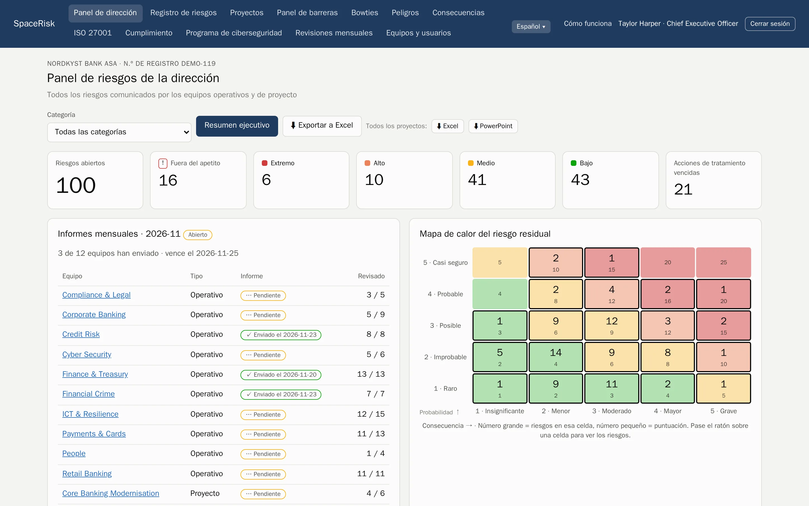
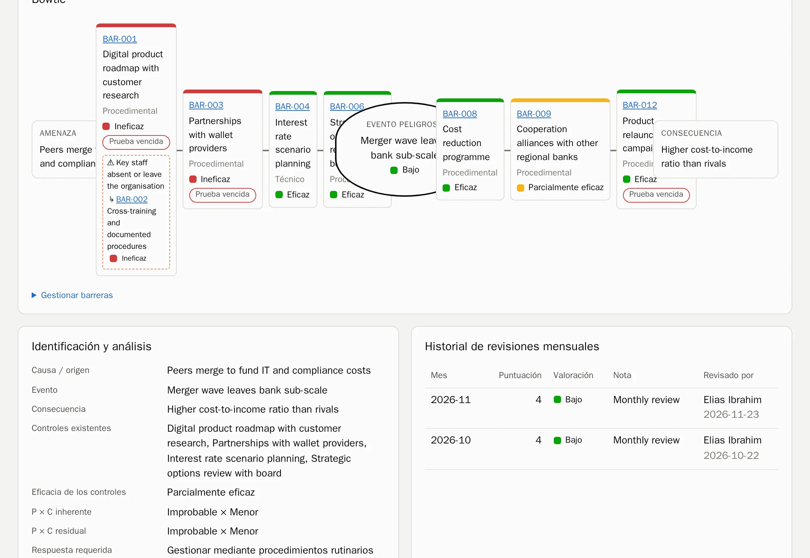
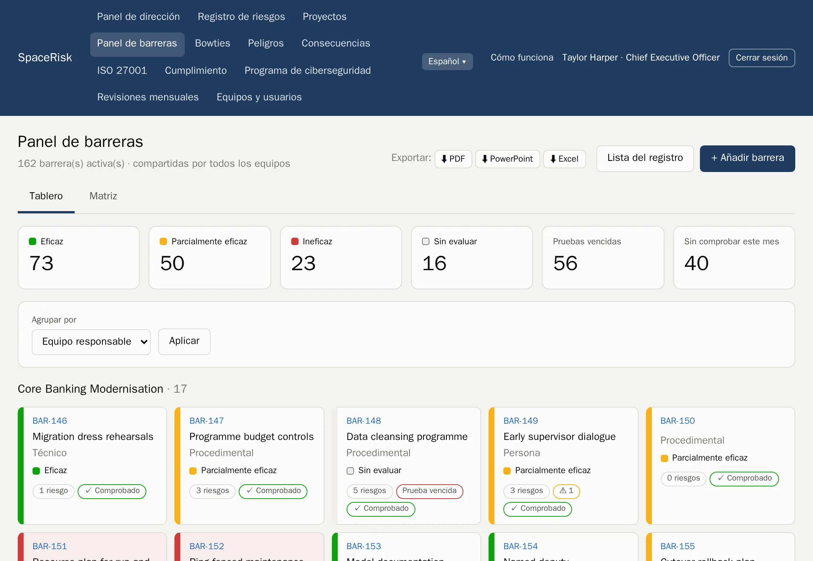
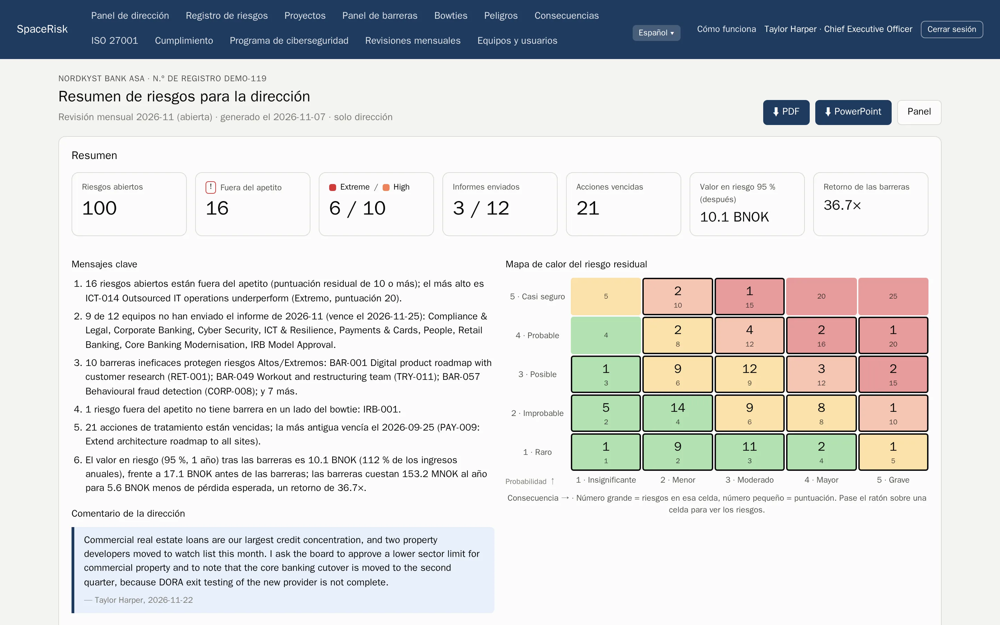
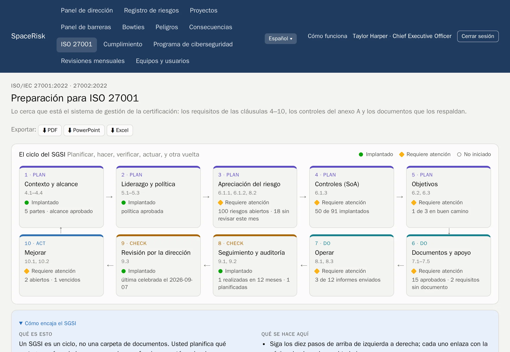
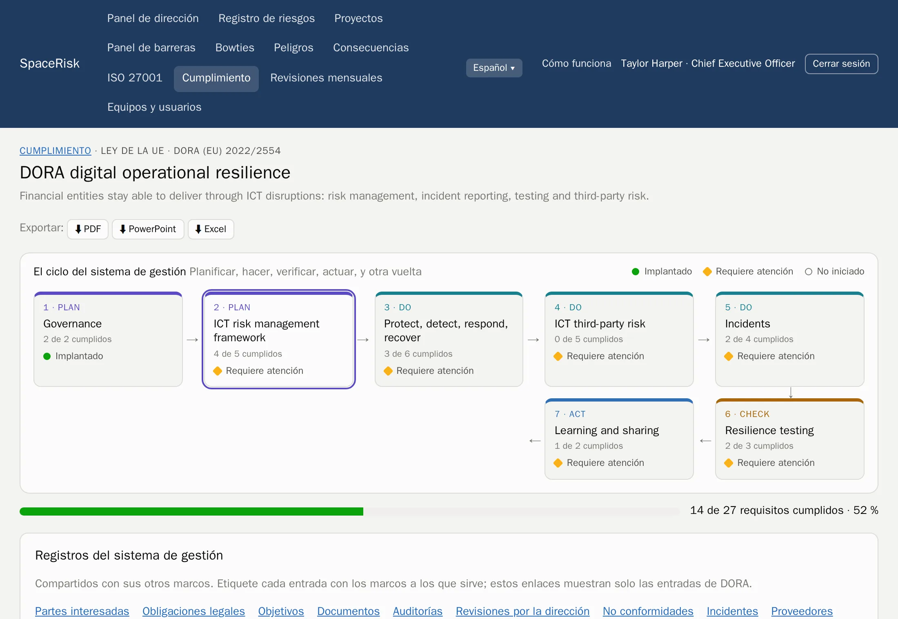
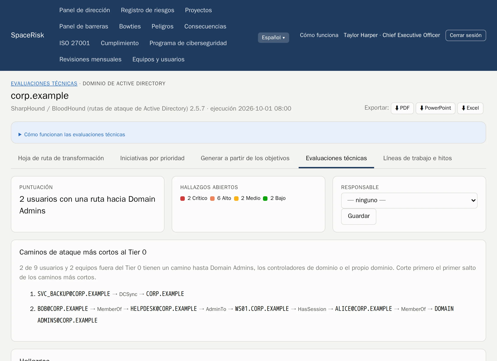
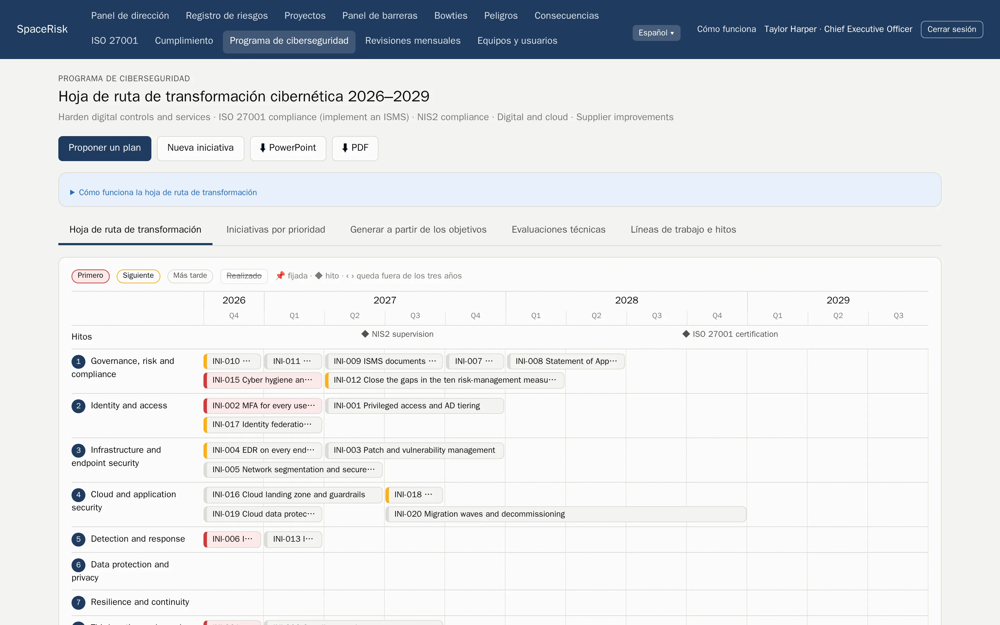

Gestión de riesgos ISO 31000
Cada riesgo, del equipo al consejo.
SpaceRisk convierte los riesgos que conocen sus equipos en bowties vivos, comprueba cada mes las barreras que los detienen y muestra a la dirección lo que costarían.
Alojado por nosotros o en sus propios servidores. Sus datos son siempre suyos.

- Banca
- Seguros
- Hospitales
- Petróleo y gas
- Electricidad
- Software
- Sector público
- Logística
- Construcción
- Comercio minorista
Cómo funciona
El ciclo ISO 31000, integrado en el mes.
Nada de un proyecto de riesgos aparte que se queda obsoleto. SpaceRisk aplica la norma como un ritmo mensual sencillo que cualquier equipo puede seguir.
- 1
Fije los criterios
Una escala de probabilidad y consecuencia, su apetito de riesgo y sus categorías.
- 2
Identifique
Equipos y proyectos registran lo que puede salir mal, allí donde trabajan.
- 3
Analice y evalúe
Niveles inherente, residual y objetivo, frente al apetito de riesgo.
- 4
Trate
Barreras y acciones con responsables y plazos.
- 5
Supervise y revise
Cada mes, cada equipo revisa sus riesgos, comprueba sus barreras y entrega su informe.
Bowties y barreras
Vea qué se interpone entre una amenaza y el daño.
Cada riesgo es un bowtie: las amenazas a la izquierda, las consecuencias a la derecha y las barreras en medio. Las barreras están en un registro compartido, así que un control puede proteger muchos riesgos y verá enseguida cuándo uno débil carga con demasiado.
- Barreras preventivas y mitigadoras, con su eficacia y la fecha de la última prueba
- Un panel de barreras para toda la organización, agrupado por equipo responsable o por tipo
- Factores de escalada y las barreras que protegen a las barreras


Revisiones mensuales
Un mismo ritmo para todos los equipos.
Cada mes el equipo revisa todos sus riesgos y comprueba cada barrera; después, el responsable del equipo entrega el informe. Siempre sabe quién está al día, y la tendencia de cada riesgo se construye sola.
- Paneles por equipo y por proyecto, con mapa de calor y la tendencia de cada riesgo
- Informes que solo se pueden entregar cuando todos los riesgos están revisados
- Un comentario para cada mes y todo el historial para el auditor
Para la dirección
El riesgo en el idioma del consejo.
SpaceRisk pone precio a la exposición: pérdida esperada, un Value at Risk simulado antes y después de las barreras, y el retorno de lo que cuestan las barreras. El resumen ejecutivo redacta sus propios mensajes clave y está listo para presentar.
- VaR 95 %
- simulado, antes y después de las barreras
- 1 clic
- resumen ejecutivo en PDF o PowerPoint
- Excel
- todos los registros, listos para analizar

Cumplimiento
Dos módulos. Un sistema de gestión.
Añada el módulo ISO 27001, el módulo de cumplimiento o ambos. Cada marco muestra su ciclo con el progreso al día y sus próximos pasos, y todos comparten los mismos registros: partes interesadas, obligaciones legales, objetivos, documentos, auditorías, revisiones por la dirección, no conformidades, incidentes y proveedores.
ISO/IEC 27001 y 27002
Cláusulas 4–10, los 93 controles, una declaración de aplicabilidad, el ciclo del SGSI y exportaciones listas para auditoría. Incluye el programa cibernético.
ISO 22301 e ISO 45001
Análisis de impacto en el negocio con RTO y RPO, ejercicios de continuidad, consulta a los trabajadores y la jerarquía de controles.
NIS2 y DORA
Plazos de notificación de incidentes, el registro de proveedores y el registro de información, y pruebas de resiliencia. Con las leyes noruegas.
RGPD e ISO 27701
Registro de actividades de tratamiento, EIPD y solicitudes de los interesados con su plazo de un mes.
ISO 42001
Un inventario de sistemas de IA con su evaluación según el Reglamento de IA de la UE, y evaluaciones de impacto de la IA.
Cyber Resilience Act
Productos con elementos digitales y vulnerabilidades, con los plazos de notificación de 24 horas, 72 horas y 14 días.
- Cada requisito muestra los controles de ISO 27001 que ya cubren el mismo trabajo
- Cada marco se exporta a PDF, PowerPoint y Excel y se incluye en el resumen ejecutivo
- Las notificaciones a las autoridades vencidas aparecen en el panel de la dirección


Orientación, no asesoramiento jurídico. Los textos de los requisitos están redactados con nuestras propias palabras.
Programa de ciberseguridad
De los hallazgos de seguridad a un plan a tres años.
Suba los resultados de las herramientas que su equipo ya utiliza. SpaceRisk convierte los hallazgos en evidencias para los controles ISO correctos, encuentra los caminos de ataque más cortos hacia sus administradores de dominio y propone un programa priorizado en un mapa de transformación que puede llevar directamente al consejo.
- PingCastle
- Prowler
- SharpHound
- Hallazgos, tendencias y correcciones por objetivo, en cada ejecución
- Caminos de ataque hacia el Tier 0 a partir de datos de Active Directory
- Un mapa de transformación puntuado, exportable a PowerPoint y PDF


Agentes y API
Deje el papeleo a sus agentes. Las personas siguen decidiendo.
Los scripts y agentes de IA tienen sus propios tokens y una API REST documentada. Notifican y revisan riesgos, comprueban barreras y suben resultados de herramientas. En modo propuesta, cada cambio espera en una bandeja hasta que una persona lo aprueba.
- Documentación OpenAPI
- Cada propuesta se valida antes de que nadie la apruebe
- Los tokens de los agentes se guardan como hash
POST /api/v1/risks/ICT-014/review
Authorization: Bearer ••••••••
← 202 esperando aprobación en la bandeja
POST /api/v1/assessments/uploads?tool=pingcastle
Content-Type: application/xml
← 201 resultados guardadosDemostraciones
92 empresas para explorar, de bancos a hospitales.
Empiece en un mundo que reconoce. Cada demostración es una empresa ficticia con sus propios equipos, riesgos, barreras e historial, lista en minutos. Cada una incluye un resumen ejecutivo de ejemplo en PDF.
Hecho para inspirar confianza.
Alojado o en sus servidores
Lo gestionamos por usted, o lo ejecuta en sus propios servidores, en Intel o ARM.
Sus datos son suyos
Exporte todo en PDF, PowerPoint, Excel o una copia completa de la base de datos, cuando quiera.
Acceso por rol
La dirección lo ve todo. Los equipos ven lo suyo. Las cifras económicas quedan en la dirección.
Siete idiomas
Inglés, noruego, alemán, español, francés, italiano y portugués, para cada usuario.
Vea SpaceRisk con sus propios riesgos.
Cuéntenos sobre su organización y prepararemos una demostración que se parezca a la suya.